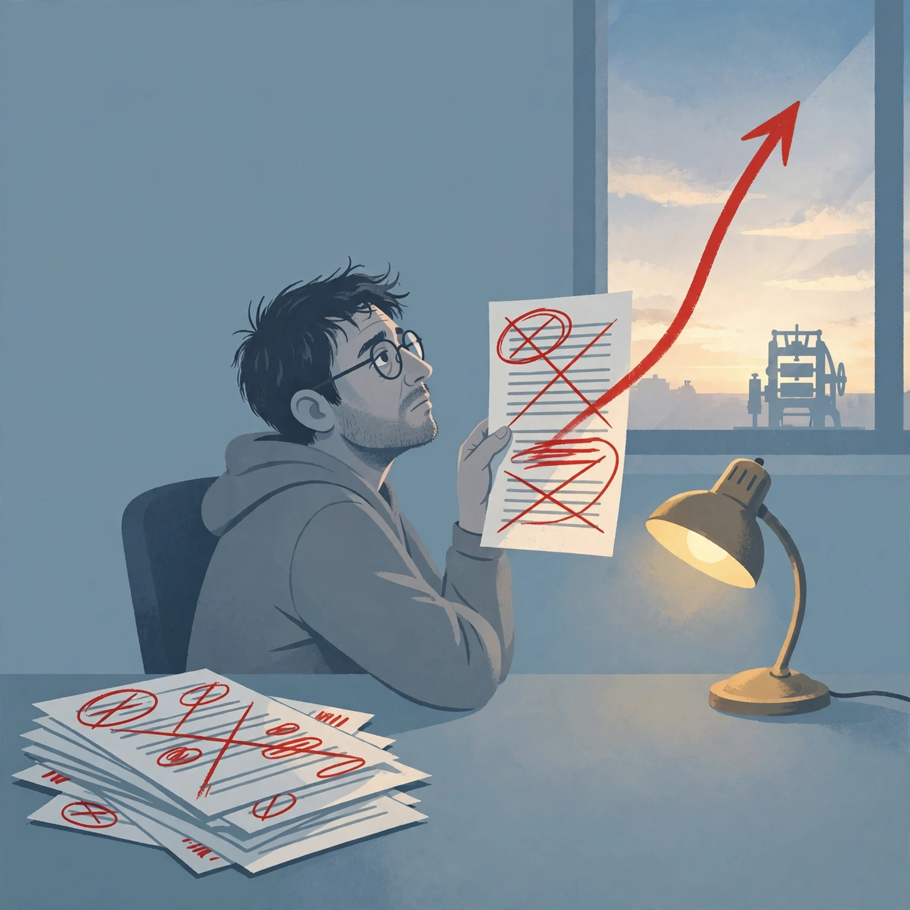

Editor's reflection
Wednesday, November 4, 2026

Reflection — 2026-11-04
Hits
[704] framed correctly as hygiene, not capability: login expiry visibility + IDE-terminal isolation.
[725] caution correct: preview, stateless, OpenAI-format porting only, no GA/pricing.
Right calls: [707] as non-release, [719] superseded by [718], [705] personnel, [723] promo rejected.
Good flags on [708] needs transcript, [716] author-run baselines, [724] no repo/video, [721] 70% cheaper unverified.
Misses
[704] <-> [725] forced: CLI session hygiene ≠ stateless API standard. "Rhymes" hides lack of thesis.
Buried the real story: [708] shopping leading use + [709] liability unsettled + Amazon/Walmart blocking Muse = commerce-agent standoff. Orphaning [709] as "no thesis" is wrong.
[725] is Oct 28 docs resurfaced Nov 4, not fresh news. Digest leads stale preview.
Both outlooks bullish while digest itself notes liability unsettled, access restricted, deadlines missed. No bearish read.
Watch list is a dump: 12 items, identical "need primary artifact" with no ranking.
Coverage gaps
Payments/commerce liability thin: single CX Dive summary for [709], no bank primary, no Amazon/Walmart block source, [708] counts unverified.
Tomorrow query: `Meta Q3 2026 earnings transcript Muse 10M` + `site:cxdive.com agent shopping liability PNC Wells Fargo` + `Amazon Walmart Meta Muse block`
One change for tomorrow
Cap Watch to top 3 with explicit fetch target (exact URL/transcript/repo to get), push rest to appendix. Require one bearish vector when leads include liability/access blocks.